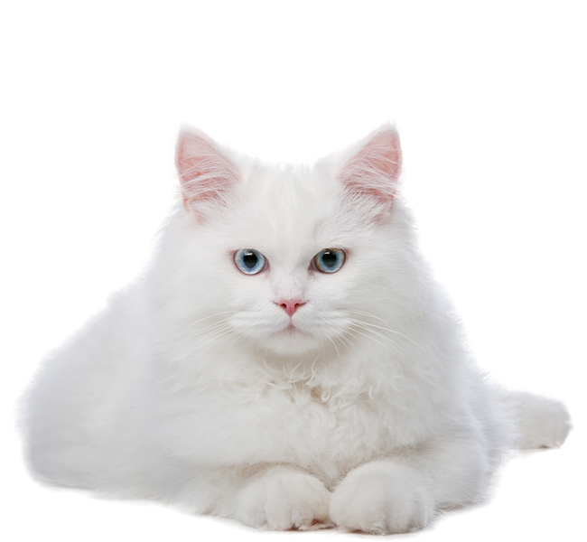

White

Ut morbi tincidunt augue interdum velit euismod in. Nunc mattis enim ut tellus elementum sagittis vitae et. Nullam eget felis eget nunc lobortis mattis aliquam faucibus. Nulla pharetra diam sit amet nisl suscipit adipiscing. Faucibus et molestie ac feugiat sed. Commodo odio aenean sed adipiscing diam. Massa id neque aliquam vestibulum morbi. Nibh venenatis cras sed felis eget velit aliquet sagittis id. Erat pellentesque adipiscing commodo elit at imperdiet dui accumsan sit. Lacus luctus accumsan tortor posuere ac ut consequat. Blandit aliquam etiam erat velit scelerisque in dictum. Vitae aliquet nec ullamcorper sit amet risus nullam eget felis. Est placerat in egestas erat imperdiet sed. Vestibulum rhoncus est pellentesque elit ullamcorper dignissim. Aliquam ut porttitor leo a. Elementum tempus egestas sed sed.